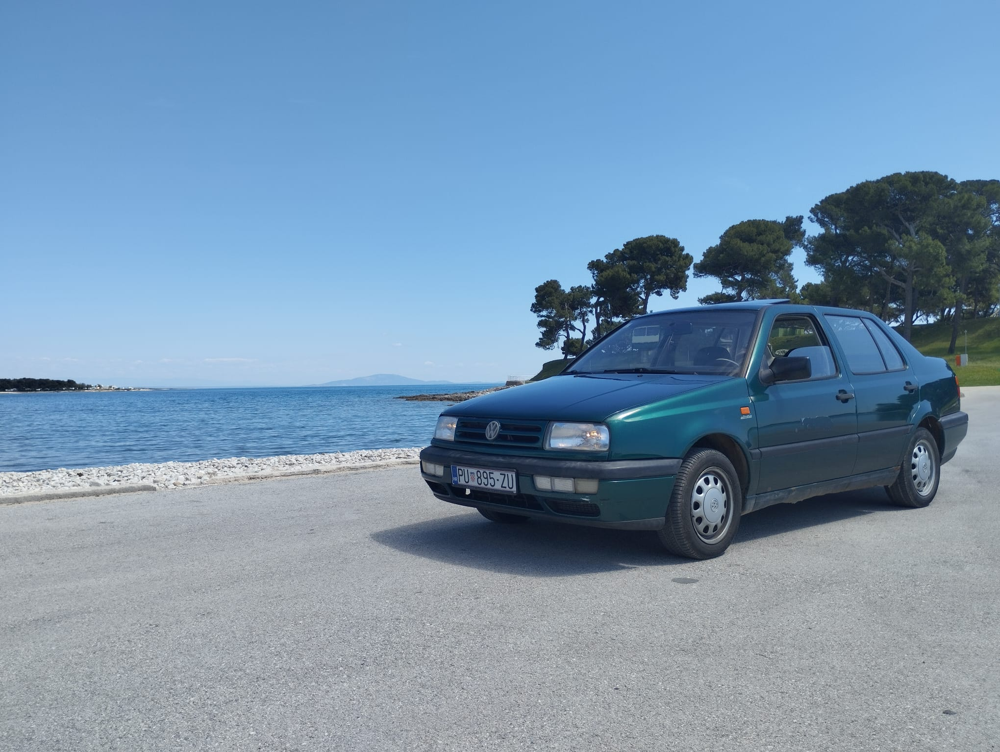
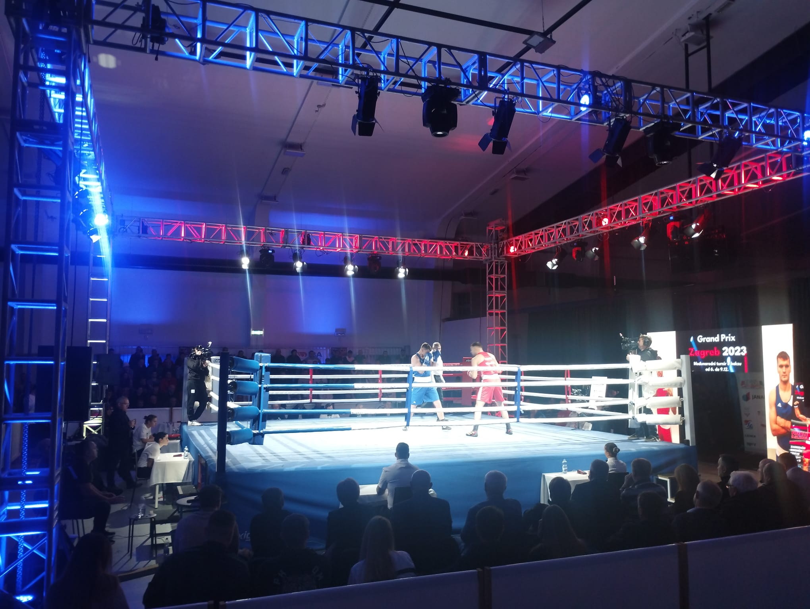
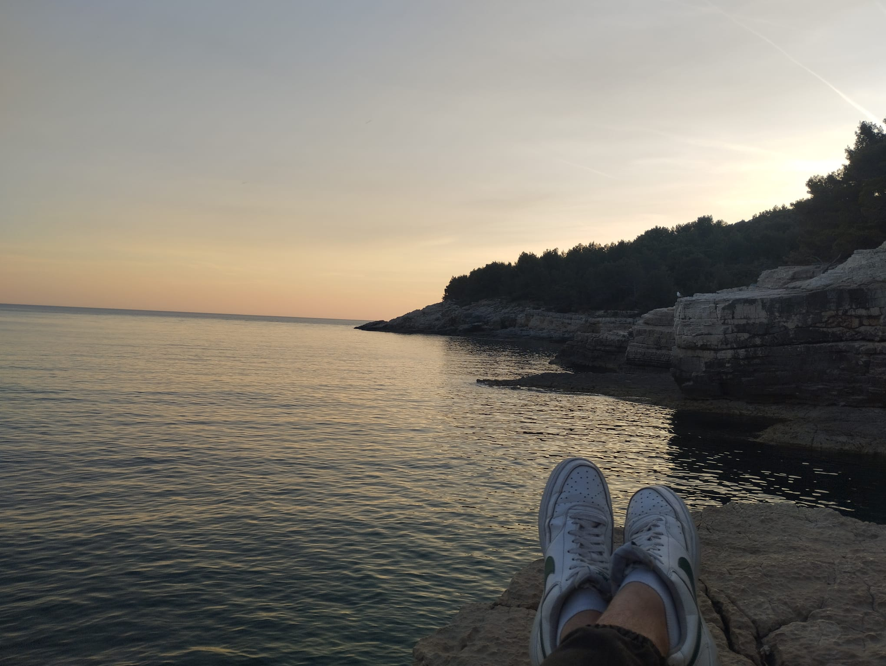

O Meni
Ja sam Nikola Zubonja Imam 20 godina te dolazim iz Pule, studiram na grafičkom fakultetu smjer tehničko-tehnološki, uz studiranje također radim i kao Barmen u klubu Roko. Ljubitelj sam auto moto sportova i borilačkih sportova od malih nogu. Svoju karijeru vidim u stalnom učenju i nadopunjavanju svojih vještina koje sam stekao. Od malih nogu volim automobile i mehaniku koja je u njima sadržana.


